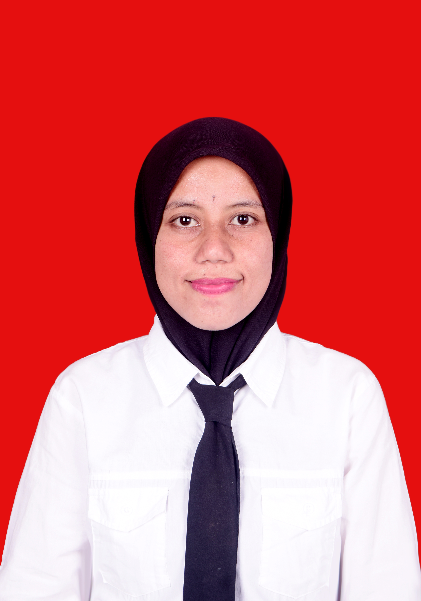

Komputasional
Setelah mempelajari materi ini, kamu mampu:
Menjelaskan pengertian dan pentingnya berpikir komputasional dalam menyelesaikan persoalan sehari-hari.
Menerapkan dekomposisi untuk memecah masalah kompleks menjadi bagian-bagian yang lebih sederhana.
Mengidentifikasi pola dan melakukan abstraksi untuk menyaring informasi penting dari suatu persoalan.
Menyusun algoritma sederhana dan menuangkannya ke dalam diagram alur (flowchart) untuk memecahkan masalah.
1. Dekomposisi
Memecah masalah besar dan rumit menjadi bagian-bagian kecil yang lebih mudah dipahami dan diselesaikan.
2. Pengenalan Pola
Menemukan kesamaan, tren, atau pola berulang di antara beberapa persoalan untuk mempercepat solusi.
3. Abstraksi
Fokus pada informasi yang penting saja dan mengabaikan detail yang tidak relevan terhadap solusi.
4. Algoritma
Menyusun langkah-langkah logis dan berurutan agar suatu masalah dapat diselesaikan secara sistematis.
5. Diagram Alur
Menggambarkan algoritma dalam bentuk simbol visual (flowchart) agar mudah dibaca dan ditelusuri.
6. Penerapan Sehari-hari
Berpikir komputasional dipakai saat memasak, merencanakan perjalanan, hingga membuat aplikasi digital.
⚙️ Atur Nilai & Jalankan
